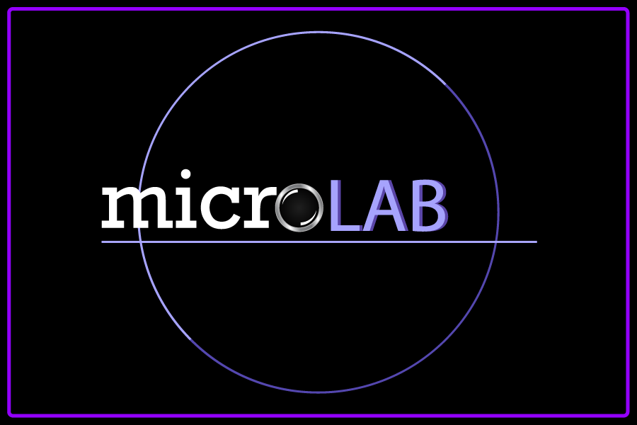

NanoSpace
mute
mute music

Loading...
Optical Microscope
Electron Microscope
Atomic Force Microscope
← Back to Microscopes
← Back to Microscopes
← Back to Microscopes
← Back to Sample Chooser
← Back to Sample Chooser
← Back to Sample Chooser